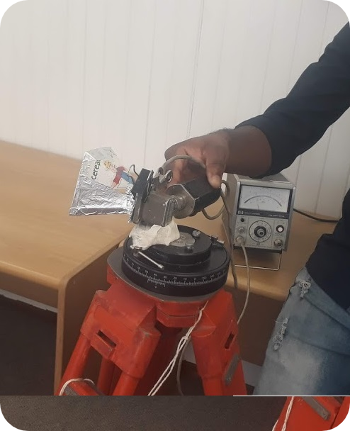

Projects
This page samples the pool of projects I have been involved on during my years of study and vacation workings during university holidays.
1. AM Transistor Radio

2. Micro-Controller controlled Power Supply
3. PRASA Vac Work

4. Horn Antenna

5. Communication Link Delays
6. Moya WISP
During my third June holidays, I joined my lecture teaching Signals and Signals 2 (mainly analogue) to take on project where I had to design, build and test an amplitude modulation radio receiver from only discrete components. The project involved acquisition, amplification and extraction of voice signals from modulated waves with noise.
AM Radio ReportIn my third year, our class was tasked with a challenge to build a Micro-controller controlled Power supply to deliver 5 V and 9 V depending on user selection. The process involved systems design methodologies from user requirements analysis, to design and testing.
Power SupplyAt the end of my third, after a powerful course on power systems engineering, I have undertaken a vacation work for 5 weeks with Prasa - Metrorail. I have learnt the real-time operation of their network for supplying power to trains and mostly focused on testing and maintaining network equipment.
General ReportIn my first semester of final year, I took a course on Microwave Engineering and dealt a lot with Radar and Communication systems, including the antennas and receivers. My partner and I were tasked to design, fabricate and test a Horn antenna from cardboard and aluminium foil.
Horn Antenna ReportThere are a few factors influencing delays in communication links. In an ELO project, our lecturer tasked us to find ways to minimise nodal processing delays in switches (hubs) and I used Mininet emulation tool to experiment on the challenge. The end goal was to increase the physical distance as possible for a given Return-Trip-Time (RTT) by reducing processing delays.
Communication Link DelaysIn our final year, we are challenged to generate a viable business idea, formulate the business model, evaluate the market and financial feasibility of the business and at the end, present a business in a pitch style and to document a business plan.
Moya Proposal